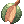
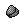

Orc/Goblin Village
Players can take up to 3 repeatable quests each from the King of Orcs and King of Goblins for LARGE amounts of EXP. Each quest has a 1 hour long cooldown starting from when it is taken.
Turning in quest will not increase your reputation, but turning in  Goblin card/
Goblin card/ Orc card will net you 50 Reputation Points each.
You can also turn in 100
Orc card will net you 50 Reputation Points each.
You can also turn in 100  Orcish Voucher to the King of Goblins for an additional 50 Reputation Points for the Goblin Village.
Also keep in mind that killing mobs of their respective village will lower your reputation with them and increase the other's.
Orcish Voucher to the King of Goblins for an additional 50 Reputation Points for the Goblin Village.
Also keep in mind that killing mobs of their respective village will lower your reputation with them and increase the other's.
This is HIGHLY recommended for leveling low-leveled characters as one quest turn-in generates enough EXP for you to reach Base lv.99 and Job lv.50 from Lv.1/1.
Orc Village
- Warper -> Dungeons -> Orc Dungeon -> Go outside -> Enter this hut:
- Take all requests then head to the map directly south of the Orc Village to take care of the first two quests.
- Head to the map directly east: to take care of the rest of the goblins

Goblin Village
- Warper -> Dungeons -> Orc Dungeon -> Go outside -> Enter the map directly south of the Orc Village here -> Interact with the King of Goblins:
- Take all requests then head back to the Orc Village to hunt down Orc Warrior, Orc Lady, and Orc Baby.
- Return to the Orc Dungeon floors 1 and 2 to hunt down Orc Zombie, Orc Skeleton, and Zenorc.
Reputation Shop
As you level up your reputation, a shop will be available to you for each village starting at Reputation Lv1 maxing at Lv3.

Orc Reputation Shop
Lv.1
 Red Herb: 1,000z
Red Herb: 1,000z
 Yellow Herb: 2,500z
Yellow Herb: 2,500z
Lv.2
Red Herb: 800z
Yellow Herb: 2,000z
 White Herb: 3,000z
White Herb: 3,000z
Lv.3
Red Herb: 400z
Yellow Herb: 1,000z
White Herb: 2,000z
 Blue Herb: 7,000z
Blue Herb: 7,000z
Goblin Reputation Shop
Lv.1
 Maneater Root: 4,000z
Maneater Root: 4,000z
 Maneater Blossom: 4,000z
Maneater Blossom: 4,000z
Lv.2
Maneater Root: 3,000z
Maneater Blossom: 3,000z
 Prickly Fruit: 3,000z
Lv.3
Maneater Root: 2,000z
Maneater Blossom: 2,000z
Prickly Fruit: 2,000z
 Mandragora Flowerpot: 20,000z
Mandragora Flowerpot: 20,000z
Tips
- You can take these quests at any level. As long as you can kill the goblins/orcs, you're able to take and turn in the quests. You can do these quests in a party if you wish.
- If you're still ascending jobs, try to turn these quests in at the lowest level possible to make the most out of the EXP you'll be receiving.
- It is recommended you bring  Fly Wing to navigate faster. Goblins drop them as well, which is convenient.
- As mentioned before, you can still take these quests at any level, but you will see your progress slowing at around lv.180. It's still a good idea to do them whenever you can.